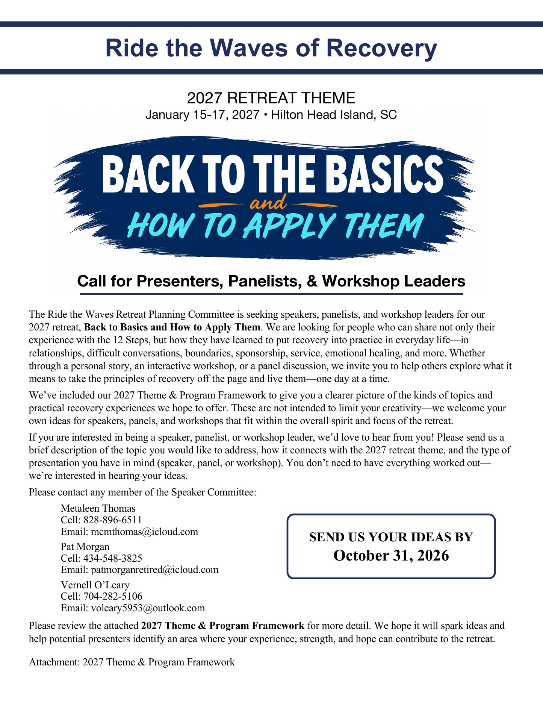
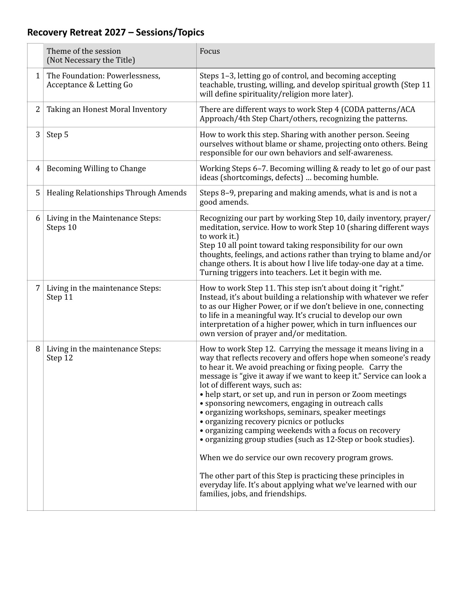
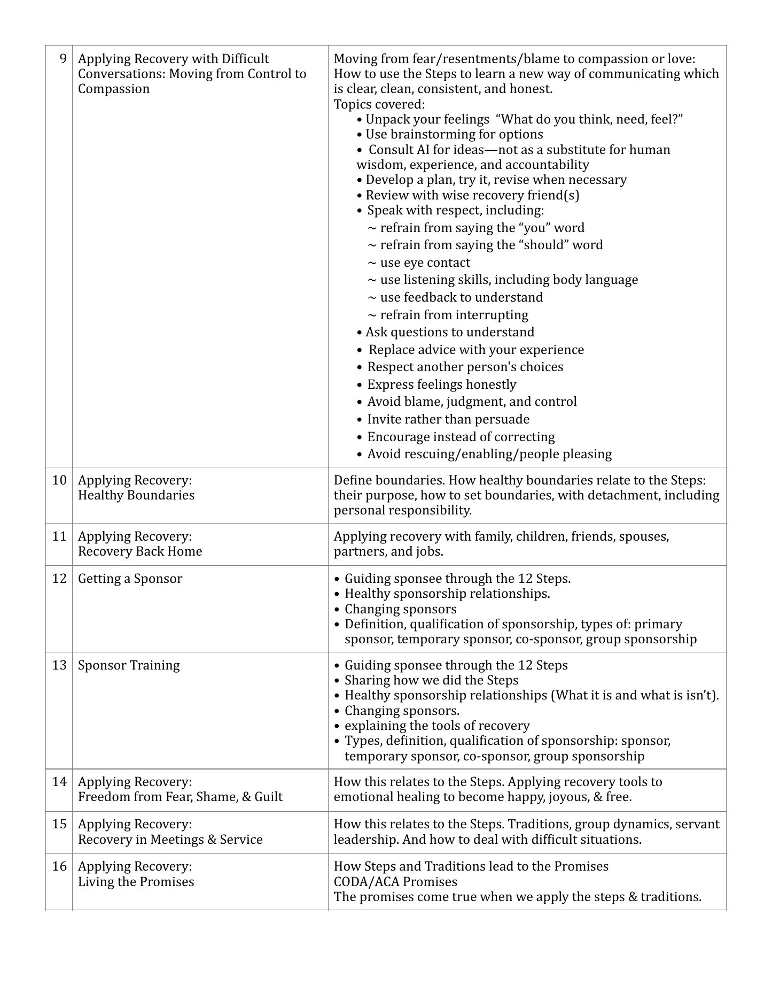

Call for Presenters, Panelists, and Workshop Leaders
Ride the Waves Retreat 2027 · January 15-17, 2027 · Hilton Head Island, SC



Read the call as text
Ride the Waves of Recovery: 2027 Retreat Theme
January 15-17, 2027, Hilton Head Island, SC
Back to the Basics and How to Apply Them
Call for Presenters, Panelists, & Workshop Leaders
The Ride the Waves Retreat Planning Committee is seeking speakers, panelists, and workshop leaders for our 2027 retreat, Back to Basics and How to Apply Them. We are looking for people who can share not only their experience with the 12 Steps, but how they have learned to put recovery into practice in everyday life, in relationships, difficult conversations, boundaries, sponsorship, service, emotional healing, and more. Whether through a personal story, an interactive workshop, or a panel discussion, we invite you to help others explore what it means to take the principles of recovery off the page and live them, one day at a time.
We've included our 2027 Theme & Program Framework to give you a clearer picture of the kinds of topics and practical recovery experiences we hope to offer. These are not intended to limit your creativity. We welcome your own ideas for speakers, panels, and workshops that fit within the overall spirit and focus of the retreat.
If you are interested in being a speaker, panelist, or workshop leader, we'd love to hear from you! Please send us a brief description of the topic you would like to address, how it connects with the 2027 retreat theme, and the type of presentation you have in mind (speaker, panel, or workshop). You don't need to have everything worked out. We're interested in hearing your ideas.
Please contact any member of the Speaker Committee:
- Metaleen Thomas
Cell: 828-896-6511
Email: mcmthomas@icloud.com - Pat Morgan
Cell: 434-548-3825
Email: patmorganretired@icloud.com - Vernell O'Leary
Cell: 704-282-5106
Email: voleary5953@outlook.com
Send us your ideas by October 31, 2026.
Please review the attached 2027 Theme & Program Framework for more detail. We hope it will spark ideas and help potential presenters identify an area where your experience, strength, and hope can contribute to the retreat.
Read the 2027 Theme & Program Framework as text
| # | Theme of the session (Not Necessary the Title) | Focus |
|---|---|---|
| 1 | The Foundation: Powerlessness, Acceptance & Letting Go | Steps 1–3, letting go of control, and becoming accepting teachable, trusting, willing, and develop spiritual growth (Step 11 will define spirituality/religion more later). |
| 2 | Taking an Honest Moral Inventory | There are different ways to work Step 4 (CODA patterns/ACA Approach/4th Step Chart/others, recognizing the patterns. |
| 3 | Step 5 | How to work this step. Sharing with another person. Seeing ourselves without blame or shame, projecting onto others. Being responsible for our own behaviors and self-awareness. |
| 4 | Becoming Willing to Change | Working Steps 6–7. Becoming willing & ready to let go of our past ideas (shortcomings, defects) ... becoming humble. |
| 5 | Healing Relationships Through Amends | Steps 8–9, preparing and making amends, what is and is not a good amends. |
| 6 | Living in the Maintenance Steps: Steps 10 |
Recognizing our part by working Step 10, daily inventory, prayer/meditation, service. How to work Step 10 (sharing different ways to work it.) Step 10 all point toward taking responsibility for our own thoughts, feelings, and actions rather than trying to blame and/or change others. It is about how I live life today-one day at a time. Turning triggers into teachers. Let it begin with me. |
| 7 | Living in the maintenance Steps: Step 11 | How to work Step 11. This step isn't about doing it "right." Instead, it's about building a relationship with whatever we refer to as our Higher Power, or if we don't believe in one, connecting to life in a meaningful way. It's crucial to develop our own interpretation of a higher power, which in turn influences our own version of prayer and/or meditation. |
| 8 | Living in the maintenance Steps: Step 12 |
How to work Step 12. Carrying the message it means living in a way that reflects recovery and offers hope when someone's ready to hear it. We avoid preaching or fixing people. Carry the message is "give it away if we want to keep it." Service can look a lot of different ways, such as:
When we do service our own recovery program grows. The other part of this Step is practicing these principles in everyday life. It's about applying what we've learned with our families, jobs, and friendships. |
| 9 | Applying Recovery with Difficult Conversations: Moving from Control to Compassion |
Moving from fear/resentments/blame to compassion or love: How to use the Steps to learn a new way of communicating which is clear, clean, consistent, and honest. Topics covered:
|
| 10 | Applying Recovery: Healthy Boundaries | Define boundaries. How healthy boundaries relate to the Steps: their purpose, how to set boundaries, with detachment, including personal responsibility. |
| 11 | Applying Recovery: Recovery Back Home | Applying recovery with family, children, friends, spouses, partners, and jobs. |
| 12 | Getting a Sponsor |
|
| 13 | Sponsor Training |
|
| 14 | Applying Recovery: Freedom from Fear, Shame, & Guilt | How this relates to the Steps. Applying recovery tools to emotional healing to become happy, joyous, & free. |
| 15 | Applying Recovery: Recovery in Meetings & Service | How this relates to the Steps. Traditions, group dynamics, servant leadership. And how to deal with difficult situations. |
| 16 | Applying Recovery: Living the Promises |
How Steps and Traditions lead to the Promises. CODA/ACA Promises. The promises come true when we apply the steps & traditions. |